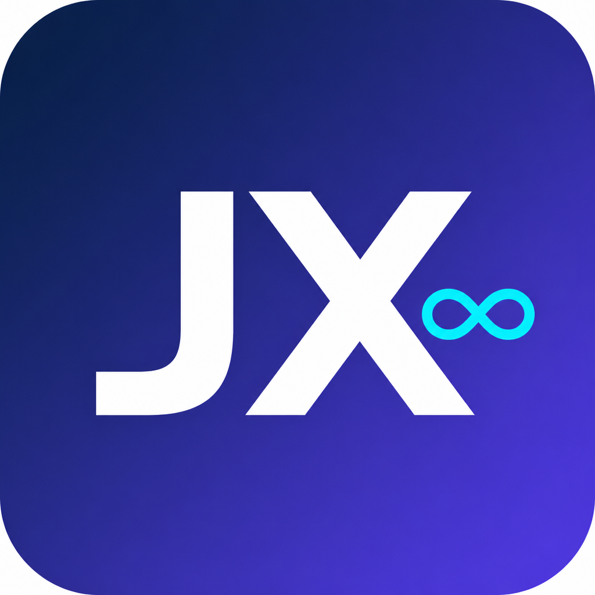

已选 0
按住空格拖动画布 · 左键框选 · Shift 加选 · 点节点可拖动 · 滚轮缩放

家兴豆包无限画布公司测试 09-10把购买时给你的卡密填在下面。一张卡只能绑定一台电脑，换机请联系售后人员解绑。
售后人员微信：无限画布。开卡、解绑、激活失败请扫码添加，不要发送密码或验证码。

将删除本机全部画布用户数据，软件会恢复成刚解压时的状态。卡密绑定通常仍在，重新打开后若需开卡或解绑，请扫码联系售后人员。
微信昵称：无限画布
账号来自你电脑上原有豆包的“切换账号”列表。画布只复用同一个官方豆包窗口，不会创建隔离窗口。
若要把软件恢复成刚解压的纯净版，会删除本机「数据」文件夹中的全部内容（画布、历史、内置浏览器账号和登录缓存、无水印素材、设置）。官方豆包客户端不受影响。